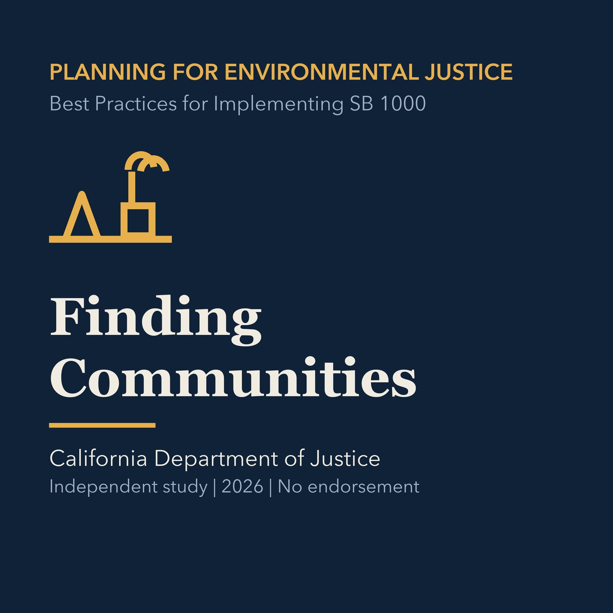

EPISODE 02
Finding Communities without Hiding People
Uses screening data, local evidence, and multiple statutory pathways without treating a threshold as a complete account of community conditions.

- Stable GUID
386ffe6a-9f21-567b-bc08-ba6203b5e5c1- Release
- environmental-justice-land-use-planning-v2026.3
- SHA-256
db0b1accbd443752d2002c62373fb5811098cb8503c8d9abf3e7f106b6764750